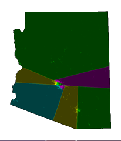
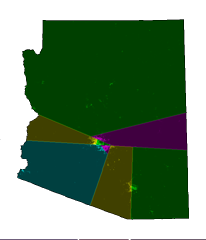
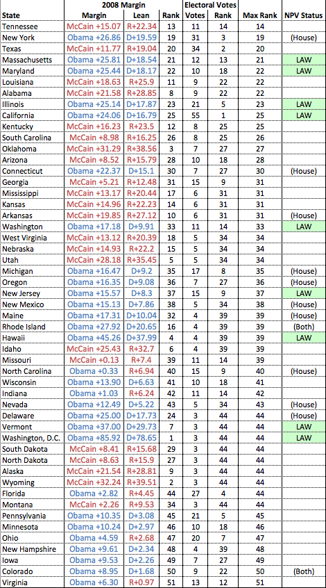

01.05.13
Posted in politics at 12:32 pm by danvk
Computer algorithms are an appealing way to fight the problem of Gerrymandering, since they’re independent of politics. I had a great time this morning reading about one such algorithm for redistricting at rangevoting.org.
Here’s a map of Arizona’s eight congressional districts as determined by their statehouse (left) and the algorithm (right):
 

Check out Arizona’s second congressional district!
The splitline algorithm is quite simple. You find the shortest line which splits the state’s population in half. Then find the shortest splitlines in those halves, until you have enough districts. The exact details are here.
I like the simplicity of this approach, but I think there’s some benefit to having coherent districts, i.e. a community having their own representative instead of being split between two representatives of other communities. That being said, I don’t see much evidence that legislatures do this right now, and it seems like a hard thing to incorporate into an algorithm. The splitline approach certainly seems better than the status quo!
I also enjoyed their discussion of Range Voting, a generalization of Approval Voting (Approval Voting is a system in which you say whether you’re OK with each candidate, rather than picking a single one).
In Range Voting, you give each candidate a rating from 0-10, or maybe 0-100. The candidate with the highest average rating wins. By letting you consider each candidate independently (instead of choosing just one or ranking them), it avoids some of the pitfalls inherent in preferential voting systems. And it has more appeal than Approval Voting because it’s more expressive: I can say that I like candidate A more than candidate B (who I’m just OK with), rather than just saying that I approve of both. Even mother nature likes range voting: Honeybees have evolved a form of it!
One interesting thought: if a state switched to using range voting or instant runoff voting, how would it affect the National Popular Vote Bill? Can we have both?
Permalink
08.14.12
Posted in politics at 9:06 pm by danvk
I’m a big fan of the National Popular Vote Bill, which seeks to do away with the Electoral College without amending the Constitution. Here’s the three-sentence explanation from their web site:
Under the U.S. Constitution, the states have exclusive and plenary (complete) power to allocate their electoral votes, and may change their state laws concerning the awarding of their electoral votes at any time. Under the National Popular Vote bill, all of the state’s electoral votes would be awarded to the presidential candidate who receives the most popular votes in all 50 states and the District of Columbia. The bill would take effect only when enacted, in identical form, by states possessing a majority of the electoral votes—that is, enough electoral votes to elect a President (270 of 538).
Intuitively, you’d expect this bill to be popular in states with:
- Large populations
- Very predictable voting patterns
These are the states like California and Texas which are large, but completely neglected under the current presidential voting system. Putting on our Nate Silver hat, we can try to quantify this. A state is large if it has lots of Electoral Votes. A state has predictable voting patterns if it differed considerably from the national popular vote in the last election. A state should support the NPV bill if it ranks highly in both of these senses:

For example, California ranks #1 in Electoral Votes (it has 55). It voted for Obama by a margin of 24% in 2008. The nation as a whole voted for Obama by a margin of 7%, so we say that California leans Democratic by 17%. Amongst all states, this is the 25th largest lean. California’s score is the larger of these two numbers (25). Repeat this analysis for all 50 states and the District of Columbia and you’ll get the chart above.
It’s not surprising to see California, Texas and New York near the top of the list. These are the three largest states, but they do not factor into presidential elections at all. Tennessee surprised me at the top of the list, but with 11 EVs and a 20+ point Republican lean, it would clearly benefit from a change in the system.
If the top three states in this list (Tennessee, Texas, New York) all passed the NPV bill, it would have 210 of the 270 EVs it needs to go into effect. Were that to happen, I believe we’d start to hear a lot more about it in the media.
Raw data here (Excel format). For what it’s worth, I now understand why Nate uses images for the tables on his blog: getting a formatted table out of Excel in any other format is nearly impossible!
Permalink
11.27.08
Posted in news, politics, web at 11:57 am by danvk
Today is the 30th anniversary of the Moscone-Milk assassinations and, fueled by the upcoming release of the movie Milk, they’ve been all over the local airways.
For those not familiar with the basic story (I wasn’t before I moved to SF), City Supervisor Dan White quit his job, then asked to be reinstated. When Mayor George Moscone refused, White returned to city hall with a gun and murdered Moscone and Supervisor Harvey Milk, who happened also be the first openly-gay elected official in the country. Another Supervisor, now-Senator Dianne Feinstein became mayor as a result of these killings.
An NPR show yesterday included a clip of Feinstein giving a dramatic press conference announcing the deaths. Much to my surprise, an original copy of that night’s newcast has found its way online.
The Feinstein press conference is at 2:10. Listen to the gasps. The 70′s production is jarring to look at now though, except for the cars, the shots of San Francisco could have been taken yesterday.
I couldn’t figure out whether this is an isolated clip or part of a larger collection. How cool would it be if all of NBC’s old newscasts were online?
Permalink
11.14.08
Posted in politics at 7:35 pm by danvk
Here’s a list of presidents and the changes in the S&P 500 during their term. Since I don’t know the future of the markets, I put today’s close in for our current president.
Not to suggest that presidents have any impact on the stock market…
| President |
End Date |
Close |
Change |
% Change |
Annual |
| G.W. Bush |
14-Nov-08 |
$873.29 |
-$469.25 |
-34.95% |
-5.35% |
| Clinton |
20-Jan-01 |
$1342.54 |
$909.17 |
209.79% |
15.18% |
| G.H.W. Bush |
20-Jan-93 |
$433.37 |
$146.74 |
51.19% |
10.89% |
| Reagan |
20-Jan-89 |
$286.63 |
$154.98 |
117.72% |
10.21% |
| Carter |
20-Jan-81 |
$131.65 |
$28.68 |
27.85% |
6.34% |
| Ford |
20-Jan-77 |
$102.97 |
$22.11 |
27.34% |
10.37% |
| Nixon |
9-Aug-74 |
$80.86 |
-$20.83 |
-20.48% |
-4.05% |
| Johnson |
20-Jan-69 |
$101.69 |
$32.08 |
46.09% |
7.62% |
| JFK |
22-Nov-63 |
$69.61 |
$9.65 |
16.09% |
5.40% |
| Eisenhower |
20-Jan-61 |
$59.96 |
$33.82 |
129.38% |
10.94% |
Permalink
11.07.08
Posted in politics at 8:26 pm by danvk
One of the least understood features of Nate Silver’s fivethirtyeight.com was his list of “tipping point states”.
I thought that, for each simulation of the election, Nate sorted the states by margin of victory for the overall winner. Then he’d start adding up electoral votes. The state that tipped the winner over 270 would be the “tipping point state” for that simulation.
While writing this blog post, I discovered that I had completely misunderstood this list! Nate describes the actual calculation of his list in this post. It’s quite involved, but better captures the intuition of a “tipping point state”.
Just for fun, I figured out what the 2008 Election’s tipping point state was using the methodology I’d originally thought Nate did. And it was… Colorado! Obama took Colorado with 54.40% of the vote, the 23rd most lopsided total. It takes him from 262 to 271 Electoral Votes.
Full list of states, margins of victory and electoral votes below the fold.
Read the rest of this entry »
Permalink
« Previous entries
Next Page »